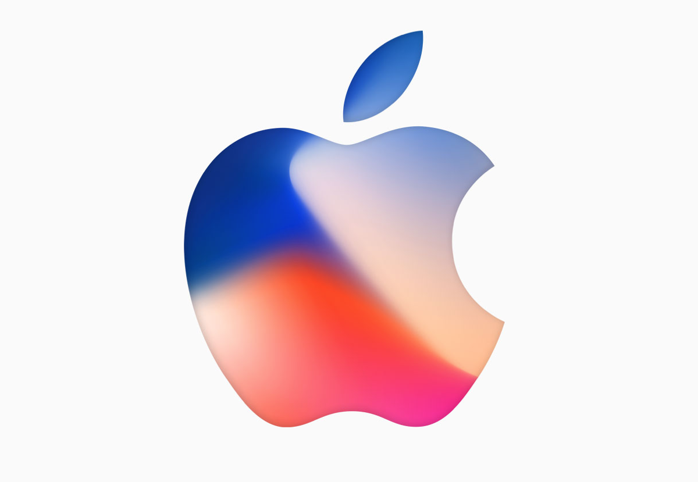
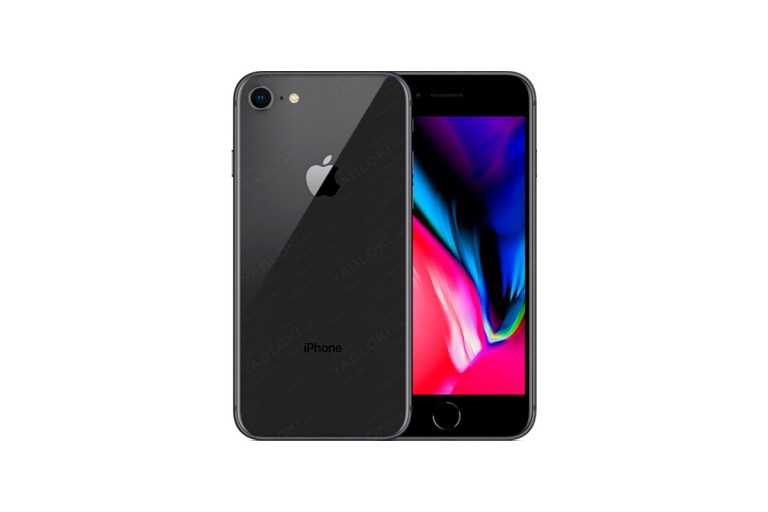
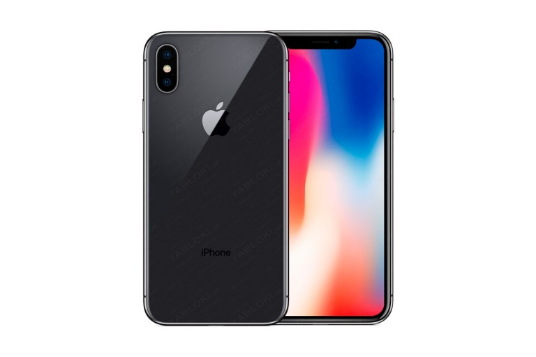

|  | New iPhone 8, X |
||
|---|---|---|---|
|
Опуститься вниз |
 | iPhone 8 Серый космос 64 ГбХарактеристики:Диагональ экрана Подробнее - 4.7 Разрешение дисплея Подробнее - 1334x750 Тип матрицы Подробнее - IPS Количество точек касания - 10 Оперативная память Подробнее 2 ГБ Встроенная память Подробнее 256 ГБ Максимальный объем поддерживаемой карты памяти Подробнее - Нет Количество контактов в телефоной книге - 50000 Количество номеров на 1 контакт - Ограничено памятью самого устройства Количество символов в названии контакта - Ограничено памятью самого устройства Количество мегапикселей фронтальной камеры Подробнее - 7 Мп Вспышка фронтальной камеры - Есть Автофокус фронтальной камеры Подробнее - Нет Стабилизация фронтальной камеры Подробнее - Нет Узнать подробнее на: yabloki.ua |
Новости Apple:Была ли революция? Apple презентовала новые iPhone;Ролик-презентацию Apple Watch 3 снимали в Киеве; Apple презентовала флагман iPhone X; Презентованы официально iPhone 8 и iPhone 8 Plus; Презентация iPhone 8: онлайн-трансляция; Apple не успела создать беспроводную зарядку для iPhone; Покупатели уже выстроились в очередь за iPhone X; |
|  | iPhone X Серый космос 64 ГбХарактеристики:Ёмкость - 64 ГБ Дисплей - 5,8 дюйма 2436×1125 пикселей, 458 пикселей на дюйм Процессор - A11 Bionic с 64-битной архитектурой Двойная камера - 12 Мп с широкоугольным и телеобъективом Запись видео - 4K с частотой 24, 30 или 60 кадров/с Запись HD-видео - 1080p с частотой 30 или 60 кадров/с Камера - 7 Мп Режим «Портрет» Максимальный объем поддерживаемой карты памяти Подробнее - Нет Распознавание лица с помощью камеры - TrueDepth Наушники - EarPods с разъёмом Lightning Системные требования Apple ID (требуется для некоторых функций) Доступ к интернету12 Узнать подробнее на: yabloki.ua |
||
| Скачать инструкцию использования сайта | Наши спонсоры: https://yabloki.ua/ |
Вверх | |